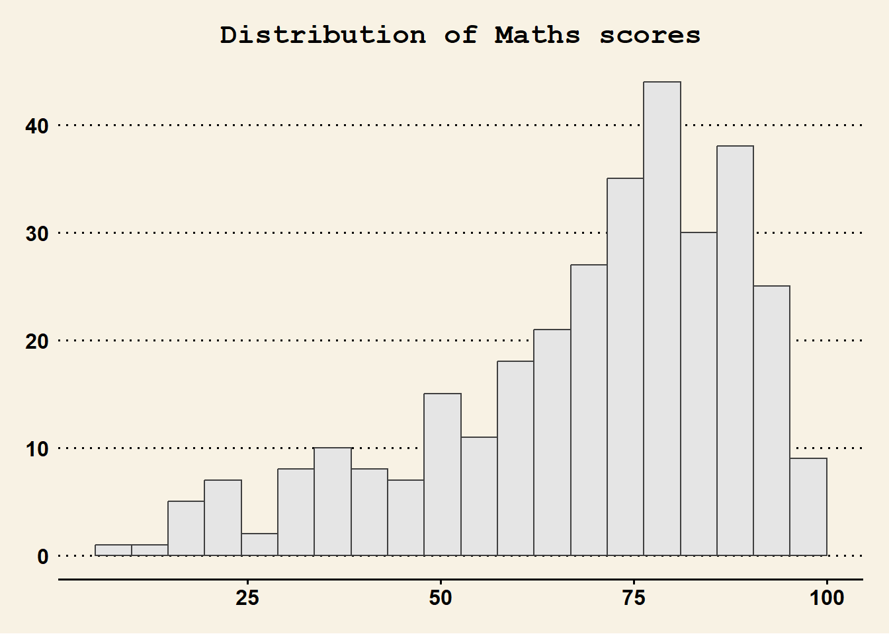

pacman::p_load(ggrepel, patchwork,
ggthemes, hrbrthemes,
tidyverse) Hands-on Exercise 2
Step 1. Installing and loading the required libraries
The below packages will be used:
- ggrepel: an R package provides geoms for ggplot2 to repel overlapping text labels.
- ggthemes: an R package provides some extra themes, geoms, and scales for ‘ggplot2’.
- hrbrthemes: an R package provides typography-centric themes and theme components for ggplot2.
- patchwork: an R package for preparing composite figure created using ggplot2.
Step 2. Importing the exercise data file
There are a total of seven attributes in the exam_data tibble data frame. Four of them are categorical data type and the other three are in continuous data type.
- The categorical attributes are: ID, CLASS, GENDER and RACE.
- The continuous attributes are: MATHS, ENGLISH and SCIENCE.
exam_data <- read_csv("DataEx2/Exam_data.csv")Step 3. Trying the various plots in the lesson
3.1 Using Annotations in Plots: ggrepel
Without the use of ggrepel:
- We will see multiple overlaps of annotations, especially with large number of data points.
ggplot(data=exam_data,
aes(x= MATHS,
y=ENGLISH)) +
geom_point() +
geom_smooth(method=lm,
size=0.5) +
geom_label(aes(label = ID),
hjust = .5,
vjust = -.5) +
coord_cartesian(xlim=c(0,100),
ylim=c(0,100)) +
ggtitle("English scores versus Maths scores for Primary 3")
With the use of ggrepel:
- ggrepel is an extension of ggplot2 package which provides
geomsfor ggplot2 to repel overlapping text as in our examples on the right. - We simply replace
geom_text()bygeom_text_repel()andgeom_label()bygeom_label_repel.
ggplot(data=exam_data,
aes(x= MATHS,
y=ENGLISH)) +
geom_point() +
geom_smooth(method=lm,
size=0.5) +
geom_label_repel(aes(label = ID),
fontface = "bold") +
coord_cartesian(xlim=c(0,100),
ylim=c(0,100)) +
ggtitle("English scores versus Maths scores for Primary 3")3.2 Using Themes in Plots: ggtheme
ggplot2 comes with eight built-in themes, they are: theme_gray(), theme_bw(), theme_classic(), theme_dark(), theme_light(), theme_linedraw(), theme_minimal(), and theme_void().
Built-in Themes Plot (basic colours):
ggplot(data=exam_data,
aes(x = MATHS)) +
geom_histogram(bins=20,
boundary = 100,
color="grey25",
fill="grey90") +
theme_gray() +
ggtitle("Distribution of Maths scores") 
To identify which Maths score bracket (interval of 5 points) has the highest count:
library(ggplot2)
library(dplyr)
# Create 20 bins from 0 to 100 (width = 5)
bin_width <- 5
breaks <- seq(0, 100, length.out = 21)
# Assign each ENGLISH score to a bin
exam_data <- exam_data %>%
mutate(bin = cut(MATHS, breaks = breaks, include.lowest = TRUE, right = FALSE))
# Count frequencies per bin and compute midpoints
bin_counts <- exam_data %>%
count(bin) %>%
mutate(
bin_range = gsub("\\[|\\)", "", bin),
bin_start = as.numeric(sub(",.*", "", bin_range)),
bin_mid = bin_start + bin_width / 2
)
# Identify the bin with the maximum count
max_bin <- bin_counts %>%
filter(n == max(n))
# Plot using geom_col for full customization
ggplot(bin_counts, aes(x = bin_mid, y = n)) +
geom_col(fill = "grey90", color = "grey25", width = bin_width) + # all bars
geom_col(data = max_bin, aes(x = bin_mid, y = n),
fill = "grey90", color = "orange", linewidth = 1.2, width = bin_width) + # highlight bar
geom_text(data = max_bin, aes(x = bin_mid, y = n + 2, label = n),
color = "orange", fontface = "bold", vjust = 0, size = 4) +
scale_x_continuous(breaks = seq(0, 100, by = 5), minor_breaks = NULL, limits = c(0, 100)) +
labs(title = "Distribution of Maths Scores",
x = "English Score",
y = "Count") +
theme_gray()
To identify which Science score bracket (interval of 5 points) has the highest count:
To identify which English score bracket (interval of 5 points) has the highest count:
3.3 Using Themes Packages in Plots: ggtheme packages
ggthemes provides ‘ggplot2’ themes that replicate the look of plots by Edward Tufte, Stephen Few, Fivethirtyeight, The Economist, ‘Stata’, ‘Excel’, and The Wall Street Journal, among others.
In the example below, The Economist theme is used for the plot for the distribution of Math scores.
ggplot(data=exam_data,
aes(x = MATHS)) +
geom_histogram(bins=20,
boundary = 100,
color="grey25",
fill="grey90") +
ggtitle("Distribution of Maths scores") +
theme_economist()
In the example below, Wall Street Journal theme is used for the plot for the distribution of Math scores. - This is done by changing it from theme_economist() to theme_wsj()
ggplot(data=exam_data,
aes(x = MATHS)) +
geom_histogram(bins=20,
boundary = 100,
color="grey25",
fill="grey90") +
ggtitle("Distribution of Maths scores") +
theme_wsj() +
theme(plot.title = element_text(size = 16, face = "bold", hjust = 0.5))
3.4 Working with hrbthemes Packages
hrbrthemes package provides a base theme that focuses on typographic elements, including where various labels are placed as well as the fonts that are used.
Code Chunk 1:
ggplot(data=exam_data,
aes(x = MATHS)) +
geom_histogram(bins=20,
boundary = 100,
color="grey25",
fill="grey90") +
ggtitle("Distribution of Maths scores") +
theme_ipsum()
Code Chunk 2:
ggplot(data=exam_data,
aes(x = MATHS)) +
geom_histogram(bins=20,
boundary = 100,
color="grey25",
fill="grey90") +
ggtitle("Distribution of Maths scores") +
theme_ipsum(axis_title_size = 18,
base_size = 15,
grid = "Y")
What are the differences between Code Chunk 1 and 2?
axis_title_sizeargument is used to increase the font size of the axis title to 18,base_sizeargument is used to increase the default axis label to 15, andgridargument is used to remove the x-axis grid lines.
3.5 Composing Plots with Multiple Graphs
This section will demonstrate how to compose plots by combining multiple graphs.
First, 3 distinct statistical graphs are drawn using the code chunks below and assigned to p1, p2 and p3 respectively.
p1 <- ggplot(data=exam_data,
aes(x = MATHS)) +
geom_histogram(bins=20,
boundary = 100,
color="grey25",
fill="grey90") +
coord_cartesian(xlim=c(0,100)) +
ggtitle("Distribution of Maths scores")p2 <- ggplot(data=exam_data,
aes(x = ENGLISH)) +
geom_histogram(bins=20,
boundary = 100,
color="grey25",
fill="grey90") +
coord_cartesian(xlim=c(0,100)) +
ggtitle("Distribution of English scores")p3 <- ggplot(data=exam_data,
aes(x= MATHS,
y= ENGLISH)) +
geom_point() +
geom_smooth(method=lm,
size=0.5) +
coord_cartesian(xlim=c(0,100),
ylim=c(0,100)) +
ggtitle("English scores versus Maths scores for Primary 3")3.5.1 Creating Composite Graphics: pathwork methods.
There are several ggplot2 extension’s functions support the needs to prepare composite figure by combining several graphs such as grid.arrange() of gridExtra package and plot_grid() of cowplot package. In this section, I am going to shared with you an ggplot2 extension called patchwork which is specially designed for combining separate ggplot2 graphs into a single figure.
Patchwork package has a very simple syntax where we can create layouts super easily. Here’s the general syntax that combines:
- Two-Column Layout using the Plus Sign +.
- Parenthesis () to create a subplot group.
- Two-Row Layout using the Division Sign /
3.5.2 Composing Two ggplot2 Graphs.
Next, we will combine p1 and p2 to create a composite of two histograms using patchwork. Note how the syntax is used to create the plot.
p1 + p2
3.5.3 Composing Three ggplot2 Graphs and in specific position relative to each other.
We can plot more complex composite by using appropriate operators. For example, the composite figure below is plotted by using:
- “/” operator to stack two ggplot2 graphs,
- “|” operator to place the plots beside each other,
- “()” operator the define the sequence of the plotting.
(p1 / p2) | p3
3.5.4 Creating a Composite Figure with Tag.
In order to identify subplots in text, patchwork also provides auto-tagging capabilities as shown in the figure below.
((p1 / p2) | p3) +
plot_annotation(tag_levels = 'I')
3.5.5 Creating Figures with Inserts.
Beside providing functions to place plots next to each other based on the provided layout. With inset_element() of patchwork, we can place one or several plots or graphic elements freely on top or below another plot.
p3 + inset_element(p2,
left = 0.02,
bottom = 0.7,
right = 0.5,
top = 1)
3.5.6 Creating a composite figure by using patchwork and ggtheme
Figure below is created by combining patchwork and theme_economist() of ggthemes package discussed earlier.
patchwork <- (p1 / p2) | p3
patchwork & theme_economist()3.6 Extra Practice using patchwork and ggtheme
Self drew a few more plots p4 to p6 and updated p3 to p3a:
p4 <- ggplot(data=exam_data,
aes(x = SCIENCE)) +
geom_histogram(bins=20,
boundary = 100,
color="grey25",
fill="grey90") +
coord_cartesian(xlim=c(0,100)) +
ggtitle("Distribution of Science scores")# Top 10 for Maths vs Science
top10_p5 <- exam_data %>%
arrange(desc(MATHS + SCIENCE)) %>%
slice_head(n = 10)
# Top 3 for Maths vs Science (with)
top3_p5 <- top10_p5 %>%
arrange(desc(MATHS + SCIENCE)) %>%
slice_head(n = 3)
p5 <- ggplot(exam_data, aes(x = MATHS, y = SCIENCE)) +
geom_point() +
geom_point(data = top10_p5, aes(x = MATHS, y = SCIENCE), color = "blue", size = 2) +
geom_text_repel(data = top3_p5, aes(label = ID), color = "orange", fontface = "bold", size = 4) +
geom_smooth(method = lm, size = 0.5) +
coord_cartesian(xlim = c(0, 100), ylim = c(0, 100)) +
ggtitle("Science scores versus Maths scores for Primary 3")# Top 10 for English vs Science
top10_p6 <- exam_data %>%
arrange(desc(ENGLISH + SCIENCE)) %>%
slice_head(n = 10)
# Top 3 for English vs Science
top3_p6 <- top10_p6 %>%
arrange(desc(ENGLISH + SCIENCE)) %>%
slice_head(n = 3)
p6 <- ggplot(exam_data, aes(x = ENGLISH, y = SCIENCE)) +
geom_point() +
geom_point(data = top10_p6, aes(x = ENGLISH, y = SCIENCE), color = "blue", size = 2) +
geom_text_repel(data = top3_p6, aes(label = ID), color = "orange", fontface = "bold", size = 4) +
geom_smooth(method = lm, size = 0.5) +
coord_cartesian(xlim = c(0, 100), ylim = c(0, 100)) +
ggtitle("Science scores versus English scores for Primary 3")# Top 10 for English vs Maths
top10_p3a <- exam_data %>%
arrange(desc(ENGLISH + MATHS)) %>%
slice_head(n = 10)
# Top 3 for English vs Maths
top3_p3a <- top10_p3a %>%
arrange(desc(ENGLISH + MATHS)) %>%
slice_head(n = 3)
p3a <- ggplot(exam_data, aes(x = MATHS, y = ENGLISH)) +
geom_point() +
geom_point(data = top10_p3a, aes(x = MATHS, y = ENGLISH), color = "blue", size = 2) +
geom_text_repel(data = top3_p3a, aes(label = ID), color = "orange", fontface = "bold", size = 4) +
geom_smooth(method = lm, size = 0.5) +
coord_cartesian(xlim = c(0, 100), ylim = c(0, 100)) +
ggtitle("English scores versus Maths scores for Primary 3")Figure below is created by combining patchwork and theme_economist() of ggthemes package discussed earlier.
The Top 10 students from each plot are highlighted in Blue with the Top students labelled in Orange.
patchwork <- p3a / p5 / p6
patchwork & theme_economist()Conclusion from the extra practice plots:
It was found that “Student036” appeared in all 3 graphs in the Top 3 category and therefore we can postulate that he/she is likely the top student for the Primary 3 cohort.
Draw the plot to illustrate the Gender distribution across the Primary 3 Classes.
# Load required libraries
library(dplyr)
# Count gender per class
gender_counts <- exam_data %>%
group_by(CLASS, GENDER) %>%
summarise(count = n(), .groups = "drop")
# Plot the bar chart
p7 <- ggplot(gender_counts, aes(x = CLASS, y = count, fill = GENDER)) +
geom_bar(stat = "identity", position = "dodge") +
labs(title = "Gender Distribution by Class",
x = "Class",
y = "Number of Students") +
scale_fill_manual(values = c("Male" = "#1f77b4", "Female" = "pink")) +
theme_wsj()Draw the plot to illustrate the Racial distribution across the Primary 3 Classes.
# Load libraries
library(dplyr)
# Ensure RACE is in the desired stacking order
exam_data$RACE <- factor(exam_data$RACE, levels = c("Others", "Indian", "Malay", "Chinese"))
# Summarize counts of each race per class
race_counts <- exam_data %>%
group_by(CLASS, RACE) %>%
summarise(count = n(), .groups = "drop")
# Plot stacked bar chart
p8 <- ggplot(race_counts, aes(x = CLASS, y = count, fill = RACE)) +
geom_bar(stat = "identity") +
scale_fill_manual(values = c(
"Chinese" = "#1f77b4", # blue (bottom)
"Malay" = "#2ca02c", # green
"Indian" = "yellow", # yellow
"Others" = "brown" # brown
)) +
labs(title = "Racial Distribution by Class",
x = "Class",
y = "Number of Students",
fill = "Race",
axis_title_size = 18) +
theme_minimal() +
theme(plot.title = element_text(size = 16, face = "bold", hjust = 0.5))Combine both plots (Bar Charts) above into a single figure.
patchwork <- (p7 / p8)
patchwork & theme_economist()Plot the Racial Composition for entire Primary 3 Cohort
# Calculate race proportion
library(dplyr)
race_totals <- exam_data %>%
count(RACE) %>%
mutate(
prop = n / sum(n),
label = paste0(RACE, "\n", scales::percent(prop))
)
ggplot(race_totals, aes(x = "", y = prop, fill = RACE)) +
geom_bar(stat = "identity", width = 1) +
coord_polar("y") +
geom_text(aes(label = label), position = position_stack(vjust = 0.5), size = 4) +
scale_fill_manual(values = c(
"Chinese" = "#1f77b4",
"Malay" = "#2ca02c",
"Indian" = "yellow",
"Others" = "brown"
)) +
labs(title = "Race Composition (Pie Chart)", fill = "Race") +
theme_void() +
theme(plot.title = element_text(size = 20, face = "bold", hjust = 0.5))Adjusted to remove the Legend and use Labels (through ggrepel) to point to the “Race” colour and also to state the percentage of each race composition for better specificity.
# Load libraries
library(dplyr)
library(scales)
# Calculate race proportions
race_totals <- exam_data %>%
count(RACE) %>%
mutate(
prop = n / sum(n),
label = paste0(RACE, "\n", percent(prop))
) %>%
arrange(desc(RACE)) %>% # Ensure consistent stacking order
mutate(ypos = cumsum(prop) - 0.5 * prop)
# Plot pie chart with external labels using ggrepel and no legend
p9 <- ggplot(race_totals, aes(x = "", y = prop, fill = RACE)) +
geom_bar(stat = "identity", width = 1, color = "white") +
coord_polar("y") +
geom_label_repel(
aes(y = ypos, label = label),
nudge_x = 1.0,
direction = "y",
size = 4.5,
show.legend = FALSE,
segment.color = "grey30"
) +
scale_fill_manual(values = c(
"Chinese" = "#1f77b4",
"Malay" = "#2ca02c",
"Indian" = "yellow",
"Others" = "brown"
)) +
labs(title = "Primary 3 Cohort Race Composition") +
theme_void() +
theme(
plot.title = element_text(size = 20, face = "bold", hjust = 0.5),
legend.position = "none" # <-- removes the legend
)Combine all three plots above into a single figure.
patchwork <- p9 | (p7 / p8)
patchwork & theme_economist()Afternote: The “axis-lines” shows while the “legend” reappears on the Pie Chart (not sure why, suspect it is some coding error or settings), hence I would need to find a way to remove them for aesthetics point of view.